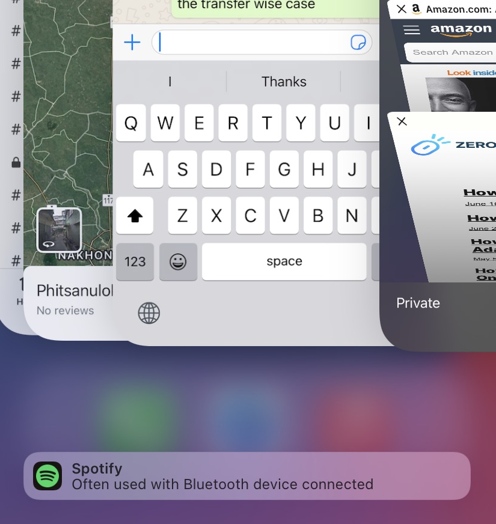
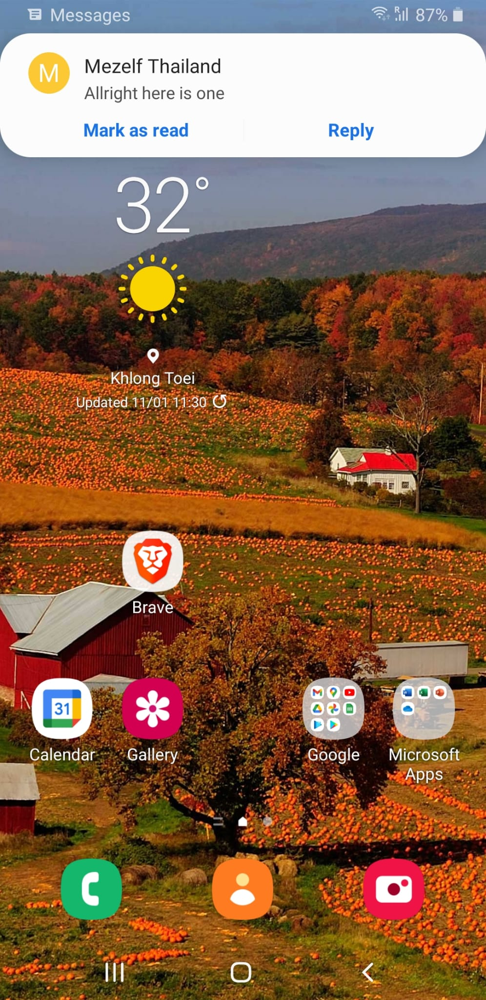

Examples of Delight
Apple and Google are amazingly good at thinking ahead what I want.
It's this level I strive for as a product manager and builder.
Here is an example from iPhone: When you connect to Bluetooth, or plug in your earphones, it gives you a proposal for an app.
It saves me around 3 to 4 swipes.
And here is one from Google: If you're frantic about keeping your inbox clean, you can Mark As Read straight from the notification.
Fyi, this is from Google's own messages app, not the default Samsung messages app